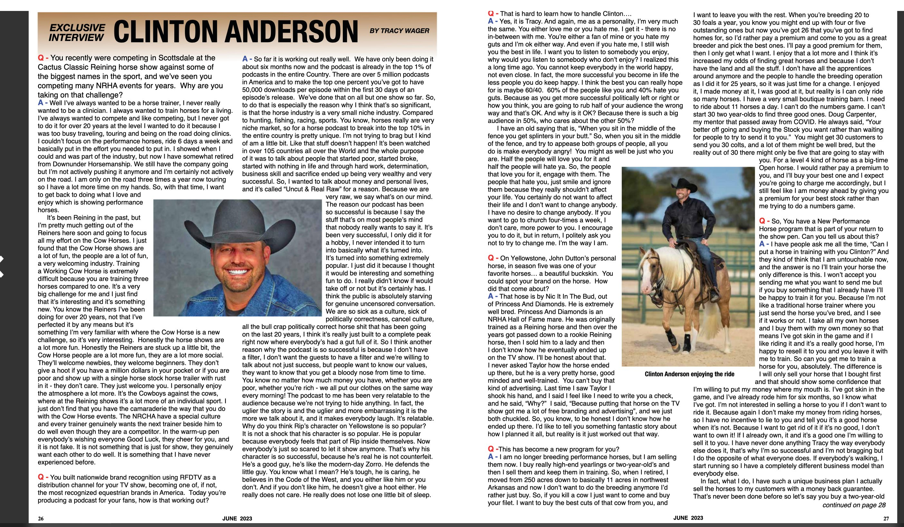
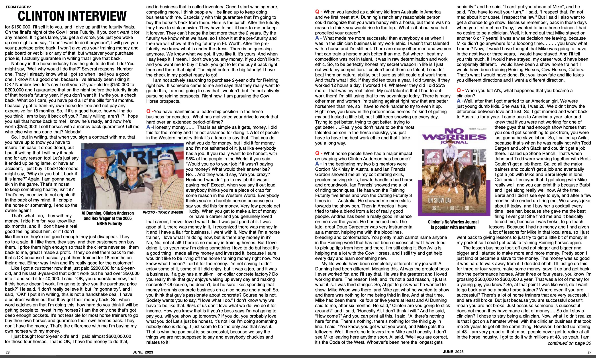
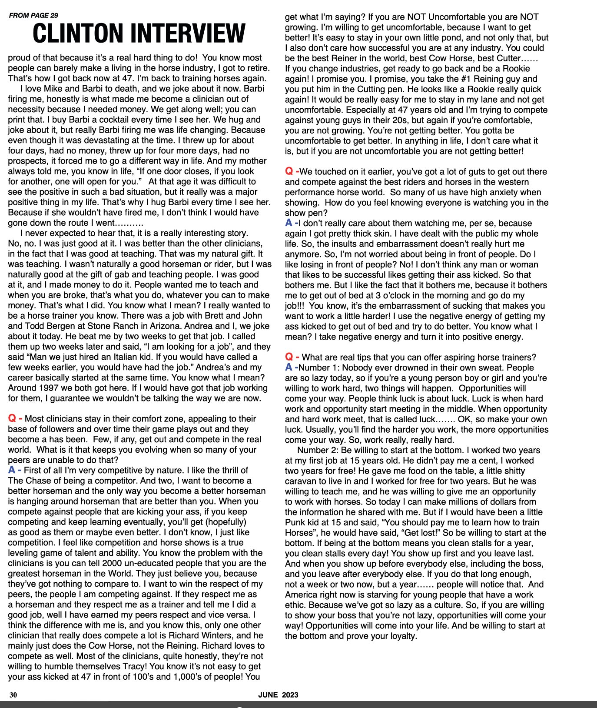

Tap image to zoom · Use arrows or dots to navigate pages
Well I've always wanted to be a horse trainer, I never really wanted to be a clinician. I always wanted to train horses for a living. I've always wanted to compete and like competing, but I never got to do it for over 20 years at the level I wanted to do it because I was too busy traveling, touring and being on the road doing clinics. I couldn't focus on the performance horses, ride 6 days a week and basically put in the effort you need to put in. I showed when I could and was part of the industry, but now I have somewhat retired from Downunder Horsemanship. We still have the company going but I'm not actively pushing it anymore and I'm certainly not actively on the road. I am only on the road three times a year now touring so I have a lot more time on my hands. So, with that time, I want to get back to doing what I love and enjoy which is showing performance horses.
It's been Reining in the past, but I'm pretty much getting out of the Reiners here soon and going to focus all my effort on the Cow Horses. I just found that the Cow Horse shows are a lot of fun, the people are a lot of fun, a very welcoming industry. Training a Working Cow Horse is extremely difficult because you are training three horses compared to one. It's a very big challenge for me and I just find that it's interesting and it's something new. You know the Reiners I've been doing for over 20 years, not that I've perfected it by any means but it's something I'm very familiar with where the Cow Horse is a new challenge, so it's very interesting. Honestly the horse shows are a lot more fun. Honestly the Reiners are stuck up a little bit, the Cow Horse people are a lot more fun, they are a lot more social. They'll welcome newbies, they welcome beginners. They don't give a hoot if you have a million dollars in your pocket or if you are poor and show up with a single horse stock horse trailer with rust in it — they don't care. They just welcome you. I personally enjoy the atmosphere a lot more. It's the Cowboys against the cows, where at the Reining shows it's a lot more of an individual sport. I just don't find that you have the camaraderie the way that you do with the Cow Horse events. The NRCHA have a special culture and every trainer genuinely wants the next trainer beside him to do well even though they are a competitor. In the warm-up pen everybody's wishing everyone Good Luck, they cheer for you, and it is not fake. It is not something that is just for show, they genuinely want each other to do well. It is something that I have never experienced before.
So far it is working out really well. We have only been doing it about six months now and the podcast is already in the top 1% of podcasts in the entire Country. There are over 5 million podcasts in America and to make the top one percent you've got to have 50,000 downloads per episode within the first 30 days of an episode's release. We've done that on all but one show so far. So, to do that is essentially the reason why I think this is so significant, is that the horse industry is a very small niche industry. Compared to hunting, fishing, racing, sports. You know, horses really are very niche market, so for a horse podcast to break into the top 10% in the entire country is pretty unique. I'm not trying to brag but I kind of am a little bit. Like that stuff doesn't happen! It's been watched in over 105 countries all over the World and the whole purpose of it was to talk about people that started poor, started broke, started with nothing in life and through hard work, determination, business skill and sacrifice ended up being very wealthy and very successful. So, I wanted to talk about money and personal lives, and it's called "Uncut & Real Raw" for a reason. Because we are very raw, we say what's on our mind.
The reason our podcast has been so successful is because I say the stuff that's on most people's mind that nobody really wants to say it. It's been very successful, I only did it for a hobby, I never intended it to turn into basically what it's turned into. It's turned into something extremely popular. I just did it because I thought it would be interesting and something fun to do. I really don't know if would take off or not but it's certainly has. I think the public is absolutely starving for genuine uncensored conversation. We are so sick as a culture, sick of politically correctness, cancel culture, all the bull crap politically correct horse shit that has been going on the last 20 years, it's really just built to a complete peak right now where everybody's had a gut full. So, I think another reason why the podcast is so successful is because I don't have a filter, I don't want the guests to have a filter and we're willing to talk about not just success, but people want to know our values, they want to know that you get a bloody nose from time to time. You know no matter how much money you have, whether you are poor, whether you're rich - we all put our clothes on the same way every morning! The podcast to me has been very relatable to the audience because we're not trying to hide anything. In fact, the uglier the story is and the uglier and more embarrassing it is the more we talk about it, and it makes everybody laugh. It's relatable.
That hose is by Nic It In The Bud, out of Princess And Diamonds. He is extremely well bred. Princess And Diamonds is an NRHA Hall of Fame mare. He was originally trained as a Reining horse and then over the years got passed down to a rookie Reining horse, then I sold him to a lady and then I don't know how he eventually ended up on the TV show. I'll be honest about that. I never asked Taylor how the horse ended up there, but he is a very pretty horse, good minded and well-trained. You can't buy that kind of advertising. Last time I saw Taylor I shook his hand, and I said I feel like I need to write you a check, and he said, "Why?" I said, "Because putting that horse on the TV show got me a lot of free branding and advertising", and we just both chuckled.
I am no longer breeding performance horses, but I am selling them now. I am purchasing well-started two-year-old's and then I sell them and keep them in training. So, when I retired, I moved from 250 acres down to basically 11 acres in northwest Arkansas and now I don't want to do the breeding anymore I'd rather just buy. So, if you kill a cow I just want to come and buy your filet. I want to buy the best cuts of that cow from you, and I want to leave you with the rest. When you're breeding 20 to 30 foals a year, you know you might end up with four or five outstanding ones but now you've got 26 that you've got to find homes for, so I'd rather pay a premium and come to you as a great breeder and pick the best ones.
Nobody in the horse industry has the guts to do that. I do! You might say, "Well why would I do that?" Several reasons. Number one, Tracy I already know what I got so when I sell you a good one, I know it's a good one, because I've already been riding it. OK? Number two, let's say I sell you a 2-year-old for $150,000 to $200,000 and I guarantee that on the night before the futurity finals of that horse's futurity year, if you don't want it, I write you a check back. Who does that? I basically got the horse to ride for free for 18 months. So, if it's a good horse, how willing do you think I am to buy it back off you? Really willing, aren't I? I hope you sell that horse back to me! I know he's ready, and now he's worth $250,000! I sell horses with a money back guarantee! Tell me who else who has done that? Nobody!
In the beginning my two big mentors were Gordon McKinlay in Australia and Ian Francis'. Gordon showed me all my colt starting skills, problem solving skills, how to handle a bad horse and groundwork. Ian Francis' showed me a lot of riding techniques. He has won the Reining Futurity five times and won the Cutting Futurity 3 times in Australia. He showed me more skills towards the show pen. Then in America I have tried to take a blend from a lot of really good people. Andrea has been a really good influence on me over the years. He has helped me. The late, great Doug Carpenter was very instrumental as a mentor, helping me with the bloodlines, breed and conformation.
When you landed as a skinny kid from Australia in America and we first meet at Al Dunning's ranch any reasonable person could recognize that you were handy with a horse, but there was no reason to think you would rise to the top. What is it about you that propelled your career? What made me more successful than everybody else when I was in the clinician business is my work ethic. I wasn't that talented with a horse and I'm still not. There are many other men and women that can train a horse much better than me. But where I beat my competition was not in talent, it was in determination and work ethic. So, to be perfectly honest my secret weapon in life is I just out work my competition. I couldn't beat them on talent, I couldn't beat them on natural ability, but I sure as shit could out work them. And that's what I did. If they did ten tours a year, I did twenty. If they worked 12 hours a day, I worked 14. Whatever they did I did 25% more. That was my real talent. My real talent is that I had to out-work them!
First of all I'm very competitive by nature. I like the thrill of The Chase of being a competitor. And two, I want to become a better horseman and the only way you become a better horseman is hanging around horseman that are better than you. When you compete against people that are kicking your ass, if you keep competing and keep learning eventually, you'll get (hopefully) as good as them or maybe even better. If you are NOT Uncomfortable you are NOT growing. I'm willing to get uncomfortable, because I want to get better! It's easy to stay in your own little pond. You could be the best Reiner in the world, best Cow Horse, best Cutter — if you change industries, get ready to go back and be a Rookie again! I promise you. I promise, you take the #1 Reining guy and you put him in the Cutting pen. He looks like a Rookie really quick again! It would be really easy for me to stay in my lane and not get uncomfortable. Especially at 47 years old and I'm trying to compete against young guys in their 20s, but again if you're comfortable, you are not growing.
Number 1: Nobody ever drowned in their own sweat. People are lazy today, so if you're a young person boy or girl and you're willing to work hard, two things will happen. Opportunities will come your way. People think luck is about luck. Luck is when hard work and opportunity start meeting in the middle. When opportunity and hard work meet, that is called luck. So, make your own luck. Usually, you'll find the harder you work, the more opportunities come your way. So, work really, really hard.
Number 2: Be willing to start at the bottom. I worked two years at my first job at 15 years old. He didn't pay me a cent, I worked two years for free! He gave me food on the table, a little shitty caravan to live in and I worked for free for two years. But he was willing to teach me, and he was willing to give me an opportunity to work with horses. So today I can make millions of dollars from the information he shared with me. Be willing to start at the bottom. If you do that long enough, not a week or two now, but a year — people will notice that. And America right now is starving for young people that have a work ethic. Because we've got so lazy as a culture. So, if you are willing to show your boss that you're not lazy, opportunities will come your way! And be willing to start at the bottom and prove your loyalty.